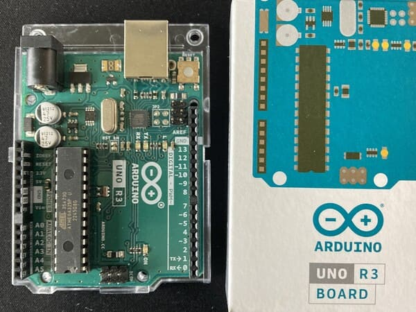

I was born in the 1980s in Communist Bulgaria.I live in Seattle, where there is a greenhouse in the middle of downtown
called the Spheres.Previously, I lived near Baker Beach in San Francisco, CA.In my current job, I forecast the business' spending on Google Cloud
(sensitive information is blacked out).I often use a Google Cloud service called Big Query to query data
in SQL for analysis (sensitive information is blacked out).Most of my work is communicated via charts
(sensitive information is blacked out).I have also worked with Autodesk CAD software to 3D print attachments.I spent a year as a graduate fellow at the Department of Energy and visited
the Hanford Site in Eastern Washington, where the famous B reactor is located.

My current project is building a simple calculator with this Arduino.I need a small motherboard to connect my Arduino calculator.My calculator will also have a small keyboard.